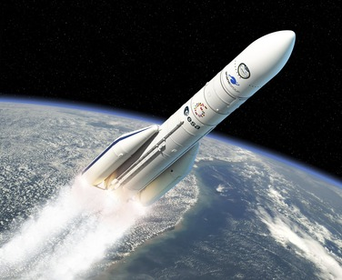

История открытия закона
Идея сохранения импульса уходит корнями в античность: Аристотель считал, что движение требует постоянной силы, но его представления были ошибочными. В эпоху Возрождения Галилео Галилей, изучая инерцию, пришёл к выводу, что тело сохраняет движение без внешних воздействий. Рене Декарт ввёл понятие «количества движения» (произведение массы на скорость) и предположил его сохранение во Вселенной. Однако математическую строгость закон приобрёл благодаря Исааку Ньютону, который в своих знаменитых «Началах» связал импульс с силой через второй закон . Ньютон показал, что в замкнутой системе внутренние силы не меняют суммарный импульс. Таким образом, Декарт предложил идею о том, что импульс в системе остается постоянным, если на систему не действуют внешние силы, а Ньютон развил эту идею, включив ее в свою систему законов механики.
Основные принципы закона
Закон сохранения импульса гласит, что в замкнутой системе (где нет внешних сил) сумма импульсов всех тел остается постоянной. Импульс определяется как произведение массы тела на его скорость.
∑pдо = ∑pпосле
Где: ∑pдо — сумма импульсов до взаимодействия, ∑pпосле — сумма импульсов после взаимодействия.
p = mv — импульс тела (m — масса тела, v — скорость тела)
Области применения закона
Закон сохранения импульса используется в различных областях, включая инженерию, астрономию и транспорт. Например, в ракетостроении реактивное движение основано на законе сохранения импульса: газы, выходящие из ракеты, создают импульс, который толкает ракету в противоположном направлении. В автомобильной безопасности этот закон учитывается при проектировании подушек безопасности и систем амортизации, которые уменьшают силу удара при столкновении. В ускорителях анализируют столкновения частиц, проверяя сохранение импульса для обнаружения новых элементов (физика элементарных частиц).
